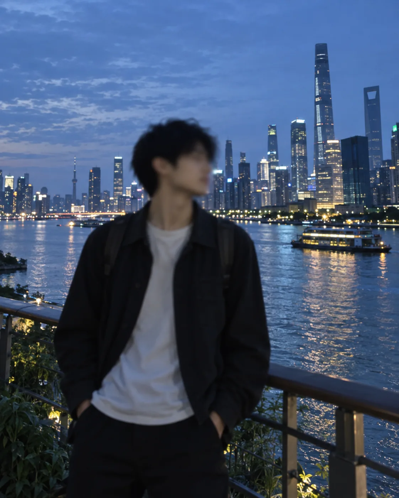
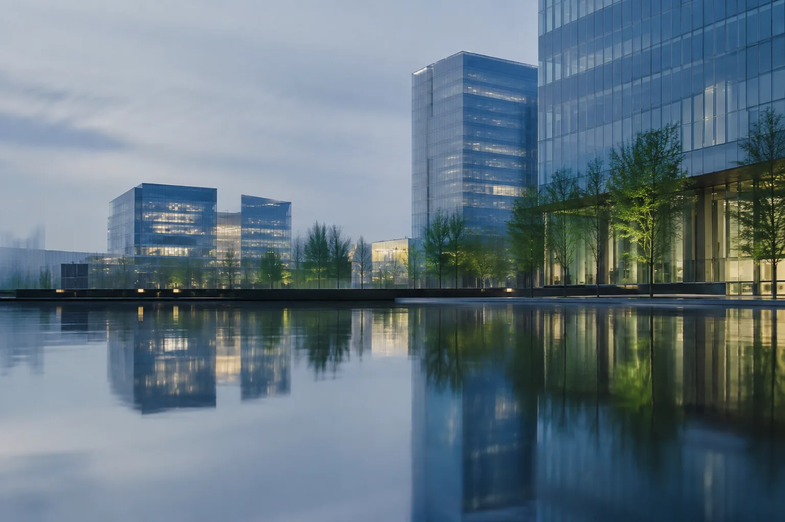

DASHBOARD AUDIT
Review hierarchy, visual clarity, metrics, and usability.
→Saya merancang dashboard profesional yang mengubah data kompleks menjadi tampilan yang cepat dipahami, mudah digunakan, dan siap dikembangkan.
data, clearly
DATAUXBUILDPartner desain untuk tim yang membutuhkan dashboard tajam secara visual sekaligus masuk akal secara operasional.
Pilih lapisan layanan sesuai kebutuhan—mulai dari audit dashboard sampai sistem desain yang siap dipakai tim produk.
Review hierarchy, visual clarity, metrics, and usability.
→Complete dashboard interface for desktop and mobile.
→Clickable flow for validation and stakeholder presentation.
→Reusable components, tokens, states, and documentation.
→Setiap tampilan diperiksa ulang dari sisi konteks, keterbacaan, konsistensi, dan kesiapan implementasi.
Definisi metrik dan struktur informasi didahulukan.
Setiap chart dipilih berdasarkan pertanyaan yang perlu dijawab.
Komponen dan state terdokumentasi untuk developer.
Forecast, conversion, funnel, dan performa tim.
SLA, backlog, produktivitas, dan hambatan harian.
Cash flow, budget, biaya, dan margin perusahaan.
Ringkasan lintas fungsi untuk review manajemen.
